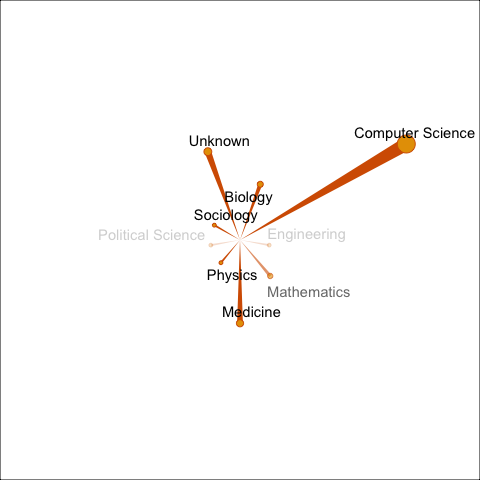

paper
The goal of paper is to produce summary of publication profile of a scientist or a paper.
Installation
You can install the released version of paper from CRAN with:
# install.packages("paper")
# not yetAnd the development version from GitHub with:
# install.packages("devtools")
# devtools::install_github("kklot/paper")
library(paper)Example
This is a basic example which shows you how to solve a common problem:
Search an author
ath <- search_author("Van Kinh Nguyen", limit = 10)
#> Found 16 potential matches, listing here the 10 authors
#> use view_web(this_object, authorID) to open the author url in your browser.
#> use get_paper(this_object, authorID) to get a table of publication
#> top ten rows
#> # A tibble: 10 × 5
#> name authorId affiliations url most_recent_paper
#> <chr> <chr> <chr> <chr> <chr>
#> 1 K. Nguyen 144006459 , https://www… Influence of maternal u…
#> 2 V. Kinh Nguyen 1398832498 , https://www… An Egyptian HPAI H5N1 i…
#> 3 V. Nguyen 2147319167 , https://www… 91. Gaps and Opportunit…
#> 4 N. Kính 3620223 , https://www… Prevalence of Advanced …
#> 5 N. V. Kinh 7909277 , https://www… Fomento de la elaboraci…
#> 6 N. Kinh 52204342 , https://www… Evaluate the relationsh…
#> 7 K. Van Nguyen 6786539 , https://www… An Expanded HIV Care Ca…
#> 8 N. van Kinh 134536179 , https://www… Effectiveness of contin…
#> 9 Kinh Nguyen Van 51926186 , https://www… Sofosbuvir-velpatasvir …
#> 10 Van Kinh Nguyen 2147319144 , https://www… Within-host evolutionar…
get_paper(ath, ath$essential$authorId[1])
#> # A tibble: 194 × 5
#> authorId paperId url title year
#> <chr> <chr> <chr> <chr> <int>
#> 1 144006459 dd9cae6f41971fce1947edd36b811d9bb594d33b https://w… Influenc… 2021
#> 2 144006459 027eef3c5965af13e9c82a6ac8cca601996b74c0 https://w… Validati… 2020
#> 3 144006459 2ec4b632b9e1e2e045c7491d3ad03086e8be00ae https://w… Effect o… 2020
#> 4 144006459 85426b1dedc07183574f27e51e703bab1d880937 https://w… Clinical… 2020
#> 5 144006459 922cf3c0cff912c07281be34bc8170bb30a734ac https://w… Virologi… 2020
#> 6 144006459 95f6d25ef4e08f7852f13c787a91dea9bfaa8225 https://w… Survival… 2020
#> 7 144006459 99b6ed39462e849e25ec261817b13cbfb388f138 https://w… Existenc… 2020
#> 8 144006459 a3067275da01f65c00cb66a49db43111e9cce222 https://w… EPIDEMIO… 2020
#> 9 144006459 c3cb349244c2e5100775d1db8e93b0dff4c54fea https://w… Efficacy… 2020
#> 10 144006459 1e47a1712d433c52eb9b067675aa0ab04d115019 https://w… Cardiova… 2019
#> # … with 184 more rowsan_author
Get an author’s papers
ex_aut <- an_author(level = 'me_only')
summary(ex_aut)
#> hIndex :85
#> paperCount :268
#> citationCount:32770
ex_aut
#> # A tibble: 285 × 5
#> paperId url year citationCount fieldsOfStudy
#> <chr> <chr> <dbl> <int> <list>
#> 1 116c1cf1650648d8… https://www.semanticscho… 2021 0 <chr [1]>
#> 2 6e5170901d940be6… https://www.semanticscho… 2021 0 <chr [1]>
#> 3 98eb27ccd9f0875e… https://www.semanticscho… 2021 6 <chr [1]>
#> 4 a197dc7522800487… https://www.semanticscho… 2019 21 <chr [1]>
#> 5 e3d5d70005bcc9d3… https://www.semanticscho… 2021 0 <chr [1]>
#> 6 2eab8dd8db899437… https://www.semanticscho… 2020 0 <chr [1]>
#> 7 329b30272c884037… https://www.semanticscho… 2019 39 <chr [1]>
#> 8 4a10dffca6dcce9c… https://www.semanticscho… 2020 379 <chr [1]>
#> 9 4a10dffca6dcce9c… https://www.semanticscho… 2020 379 <chr [1]>
#> 10 fb73b93de3734a99… https://www.semanticscho… 2019 194 <chr [1]>
#> # … with 275 more rowsPlot profile of an author
plot(ex_aut)My publication profile contribution
Author’s paper and papers cited each of those papers. Rate limit does not allow sending more than 500 requests/minutes.
- ask for more once the package is more mature
# ex_aut2 <- an_author(level = "me_and_cited_me")
# ex_aut2a_paper
Get all citations to a paper, number of citations to each of those paper, year, and field of study.
These are related papers.
ex_paper <- a_paper()
ex_paper
#> # A tibble: 111 × 5
#> paperId url year citationCount fieldsOfStudy
#> <chr> <chr> <int> <dbl> <list>
#> 1 8dc1e4bac2d0403b… https://www.semanticscho… 2022 0 <chr [1]>
#> 2 03dc6ccb0b04d5eb… https://www.semanticscho… 2020 24 <chr [1]>
#> 3 04eb972bda6e775d… https://www.semanticscho… 2021 4 <chr [1]>
#> 4 0905b384bc98e40c… https://www.semanticscho… 2021 0 <chr [1]>
#> 5 097bd00d48281dfb… https://www.semanticscho… 2020 2 <chr [1]>
#> 6 10247d86d6b9ea32… https://www.semanticscho… 2021 4 <chr [1]>
#> 7 1346d703959399ba… https://www.semanticscho… 2021 0 <chr [1]>
#> 8 148bca569a0d2833… https://www.semanticscho… 2021 0 <chr [1]>
#> 9 15e1af8533cd810e… https://www.semanticscho… 2018 4 <chr [1]>
#> 10 19af8292ff3cc10a… https://www.semanticscho… 2020 44 <chr [1]>
#> # … with 101 more rowsExample citation profile of a single paper. The extra margin is cropped with pdfcrop, see document here.
plot(ex_paper)

Profile of all papers that cited this work